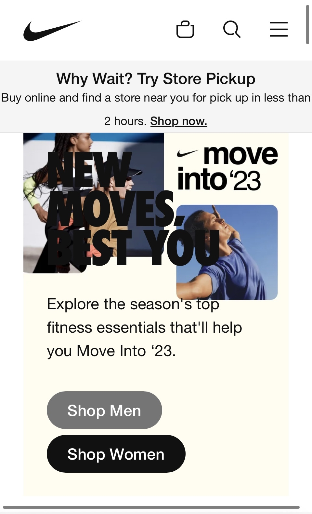
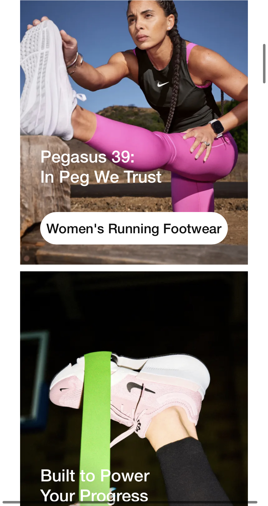
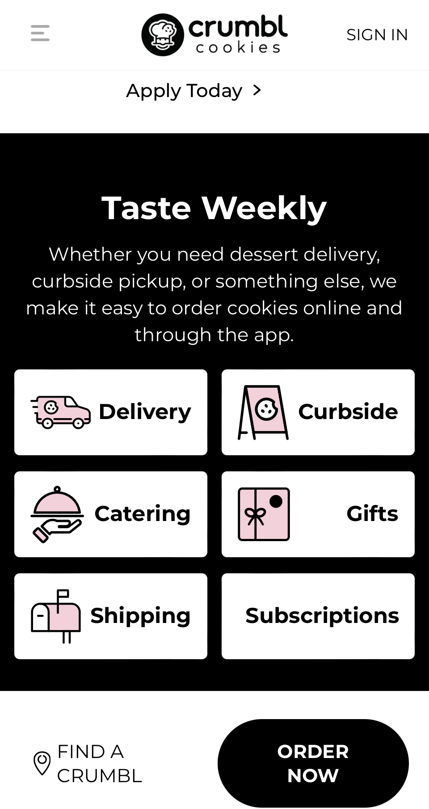
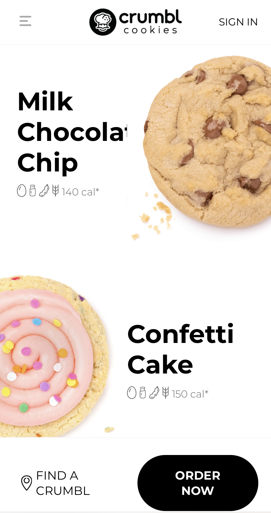

Clean Design
Nike
 When you look at nikes website you can see that everyhing looks very clean and very professional. I picked from their website to talk about their clean design because I think with anything you have to have a plan for what your website will look like and I think nike is a great show of that. Their color choices are big on the black and white look but also have a lot of images that have interesting colors like pink, neon green, some blues, and yellows which creates this very streamline and put together look.
The use of white space helps nike create the clean design look but also their webpage has no clutter, and nothing sticks out like a sore thumb. It all fits together and while its simple and a bit minimalistic, I think they balance well the simplicity with pops of color, and of course all thier shoe designs.
Emphasis
Deseret Book
You can see in the images that Deseret Books is using Emphasis with their image that is holding all these books that you can buy at Deseret Books and its highlighting the 20% off below the image and the Christmas Clearence ad.
Emphasis in design is used to catch a viewers attention to something important, in this case they're trying to emphasize the clearence and deals going on right now that will encourage people to shop right now while they can save money.
Alignment
Crumbl Cookies
 You can see in the image from Crumbl Cookies that they've aligned the differnt tools they offer like Catering, Curbside Pick Up, Delivery, Shipping, Gifts, and Subscriptions. Its very easy to read and the images they use are easy to read for all viewing. They also use good alignment with their cookie flavors, you can easily tell what cookie is called what and how many calories it has.
The alignment that they use for their webpage is easy to read and follow along with where you want to travel to in the website. You can find what you're looking for very easily and without the connection and flow of their page, the whole site would feel very chaotic.